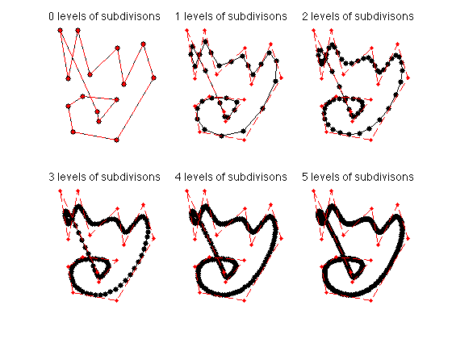
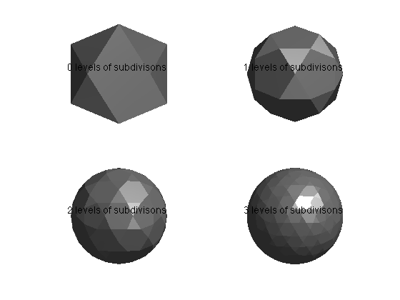
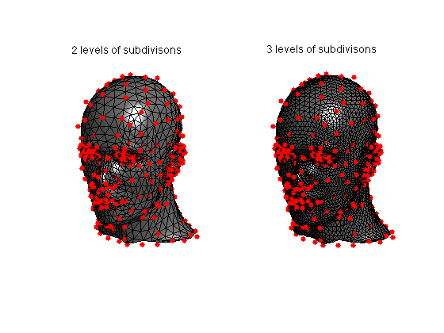
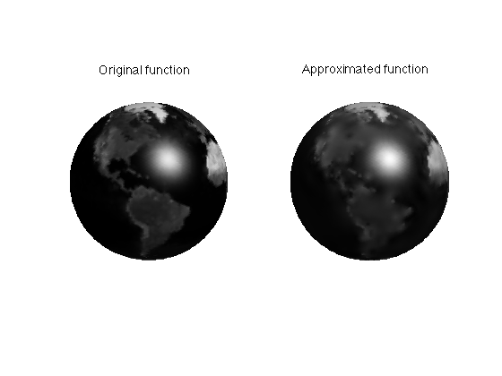
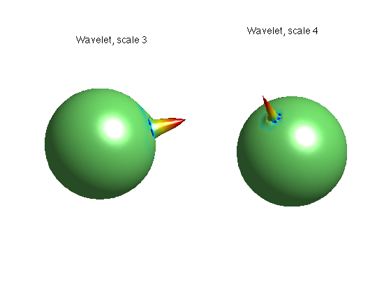
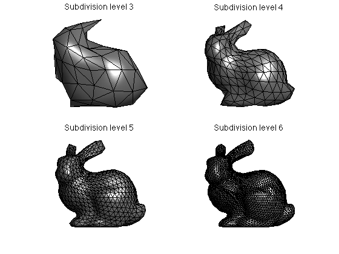
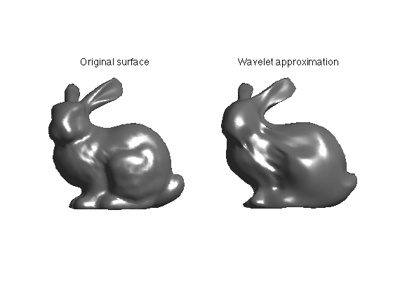

Toolbox Wavelets on Meshes - A Toolbox for Multiscale Processing of Triangulated Meshes
Copyright (c) 2008 Gabriel Peyre
Contents
The toolbox can be downloaded from Matlab Central http://www.mathworks.com/matlabcentral/fileexchange/loadFile.do?objectId=17577&objectType=FILE
First add to the path additional scripts.
path(path, 'toolbox/'); path(path, 'gim/'); path(path, 'data/'); clear options;
Curve Subdivision
Starting from an initial set of control points (which can be seen as a coarse curve), subdivision produces a smooth 2D curve.
We initialize the filter (subdivision kernel) and the control points.
options.h = [1 4 6 4 1]; % this is an example of points, you can try other sets of points f0 = [0.11 0.18 0.26 0.36 0.59 0.64 0.80 0.89 0.58 0.22 0.18 0.30 0.58 0.43 0.42; ... 0.91 0.55 0.91 0.58 0.78 0.51 0.81 0.56 0.10 0.16 0.35 0.42 0.40 0.24 0.31]; for i=1:2 f0(i,:) = rescale(f0(i,:),.01,.99); end
Perform the subdivision.
Jmax = 5; ms = 20; lw = 1.5; clf; for j=0:Jmax f = perform_curve_subdivision(f0, j, options); x = linspace(0,1,size(f,2)+1); subplot(2,3,j+1); hold on; h = plot([f(1,:) f(1,1)], [f(2,:) f(2,1)], 'k.-'); set(h, 'MarkerSize', ms); set(h, 'LineWidth', lw); % plot control polyhedron h = plot([f0(1,:) f0(1,1)],[f0(2,:) f0(2,1)], 'r.--'); set(h, 'LineWidth', lw); title([num2str(j) ' levels of subdivisons']); hold off; axis([0 1 0 1]); axis off; end
Triangulated Mesh Subdivision
You can subdivide a triangulated mesh (2D or 3D) using various rules for the subdivision of the connectivity (1:4, 1:3, dual, etc) and various rules for the subdivision of the positions of the vertices.
You can tests subdivision of a regular poyhedra. At each step, the positions are projected on the sphere, and the position are smoothed to enhance the distribution.
[vertex,face] = compute_base_mesh('ico'); options.spherical = 1; options.relaxation = 3; clf; for s=0:3 subplot(2,2,s+1); plot_mesh(vertex,face); axis tight; title([num2str(s) ' levels of subdivisons']); lighting flat; if s~=3 [vertex,face] = perform_mesh_subdivision(vertex,face,1,options); end end
You can subdivide an arbitrary mesh.
% load coarse mesh name = 'mannequin'; vertex = {}; face = {}; [vertex{1},face{1}] = read_mesh(name); options.name = name; % you can also try with 'sqrt3', 'butterfly', 'linear4' options.sub_type = 'loop'; options.spherical = 0; options.verb = 0; clf; for j=2:3 if j>1 [vertex{j},face{j}] = perform_mesh_subdivision(vertex{j-1}, face{j-1}, 1, options); end subplot(1,2,j-1); hold on; plot_mesh(vertex{j},face{j},options); axis tight; title([num2str(j) ' levels of subdivisons']); shading faceted; % display control polyhedron h = plot3(vertex{1}(1,:), vertex{1}(2,:), vertex{1}(3,:), 'r.'); % control mesh set(h, 'MarkerSize', 20); hold off; end
Wavelet Transform of Functions Defined on Surfaces
A wavelet transform can be used to compress a function defined on a surface. Here we take the example of a 3D sphere. The wavelet transform is implemented with the Lifting Scheme of Sweldens, extended to triangulated meshes by Sweldens and Schroder in a SIGGRAPH 1995 paper.
First compute a multiresolution sphere.
% options for the display options.use_color = 1; options.rho = .3; options.color = 'rescale'; options.use_elevation = 0; % options for the multiresolution mesh options.base_mesh = 'ico'; options.relaxation = 1; options.keep_subdivision = 1; J = 6; [vertex,face] = compute_semiregular_sphere(J,options);
Then define a function on the sphere. Here the function is loaded from an image of the earth.
f = load_spherical_function('earth', vertex{end}, options);
Perform the wavelet transform and remove small coefficients.
fw = perform_wavelet_mesh_transform(vertex,face, f, +1, options); % threshold (remove) most of the coefficient r = .1; fwT = keep_biggest( fw, round(r*length(fw)) ); % backward transform f1 = perform_wavelet_mesh_transform(vertex,face, fwT, -1, options); % display clf; subplot(1,2,1); plot_spherical_function(vertex,face,f, options); title('Original function'); subplot(1,2,2); plot_spherical_function(vertex,face,f1, options); title('Approximated function'); colormap gray(256);
By taking the inverse transform of a dirac, you can display a dual wavelet that is used for the reconstruction.
clf;
nverts = size(vertex{end}, 2);
i = 0;
for j = [J-3 J-2]
i = i+1;
nj = size(vertex{j},2); nj1 = size(vertex{j+1},2);
sel = nj+1:nj1-1;
d = sum( abs(vertex{end}(:,sel)) );
[tmp,k] = min(d); k = sel(k);
fw2 = zeros(nverts,1); fw2(k) = 1;
f2 = perform_wavelet_mesh_transform(vertex,face, fw2, -1, options);
options.color = 'wavelets';
options.use_color = 1;
options.rho = .6;
options.use_elevation = 1;
options.view_param = [104,-40];
subplot(1,2,i);
plot_spherical_function(-vertex{end},face{end},f2, options); axis tight;
title(['Wavelet, scale ' num2str(j)]);
end
options.view_param = [];
 Wavelet Transform of a Surface
A wavelet transform can be used to compress a suface itself. This surface should be represented as a semi-regular mesh, which is obtained by regular 1:4 subdivision of a base mesh. The surface is viewed as a 3 independent functions (X,Y,Z coordinates) and there are three wavelet coefficients per vertex of the mesh.
Firs we load a geometry image, which is a (n,n,3) array M where each M(:,:,i) encode a X,Y or Z component of the surface. The concept of geometry images was introduced by Hoppe and collaborators.
name = 'bunny'; % Load the geometry image M = read_gim([name '-sph.gim']);
Next we create the semi regular mesh from the Spherical GIM.
% option for the load and display options.func = 'mesh'; options.name = name; options.use_elevation = 0; options.use_color = 0; J = 6; % creation of the mesh [vertex,face,vertex0] = compute_semiregular_gim(M,J,options);
We can display the semi-regular mesh.
selj = J-3:J; clf; for j=1:length(selj) subplot(2,2,j); plot_mesh(vertex{selj(j)},face{selj(j)}, options); shading faceted; axis tight; title(['Subdivision level ' num2str(selj(j))]); end colormap gray(256);
Now we compress a the finest mesh as 3 functions defined on the mesh.
% The function to compress. f = vertex{end}'; % forward wavelet tranform fw = perform_wavelet_mesh_transform(vertex,face, f, +1, options); % threshold (remove) most of the coefficient r = .1; fwT = keep_biggest( fw, round(r*length(fw)) ); % backward transform f1 = perform_wavelet_mesh_transform(vertex,face, fwT, -1, options); % display clf; subplot(1,2,1); plot_mesh(f,face{end},options); shading interp; axis tight; title('Original surface'); subplot(1,2,2); plot_mesh(f1,face{end},options); shading interp; axis tight; title('Wavelet approximation');